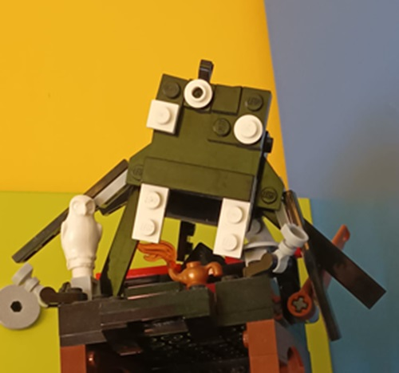
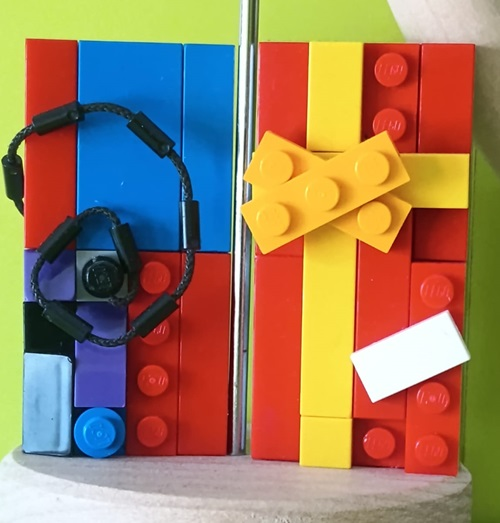

Nel corso dei miei 17 anni di vita ho acquisito numerose competenze che potrebbero essermi utili in un lavoro futuro.
In generale sono una persona abbastanza positiva a cui non dispiace mettersi alla prova e affrontare nuove sfide;
inoltre sono molto ostinato e non mi arrendo facilmente, se non riesco a raggiungere un obbiettivo
cerco in continuazione di trovare nuove soluzioni finché non ne trovo una.
Al momento non sto portando avanti alcun progetto, ma, a volte, mi piace costruire con i lego e creare qualunque oggetto mi passi per la testa.
Ecco alcune delle opere realizzate:
|  |
Ragno:Questa è la mia prima opera lego realizzata; ho cercato delle parole casuali per ispirazione e ho deciso di realizzare un ragno. È stato abbastanza semplice realizzarlo e ho impiegato solo un giorno di lavoro. La parte più complicata da realizzare è stato il corpo e le sue 8 gambe (soprattutto inserirle senza che il ragno diventasse un lombrico); ritengo invece che la faccia mi sia riuscita abbastanza bene e che rappresenti decentemente la faccia di un ragno. |
|  |
Joker di balatro:Ho realizzato inoltre questi 2 joker diBalatro, "Fibonacci" e "Gift Card", perchè sono tra i miei joker preferiti(e gli unici realizzabili con i miei pochi lego). Il joker fibonacci l'ho realizzato su una base 4x8 cercando di inserire i lego richiamando i colori del vero Joker; ho aggiunto in seguito una corda lego realizzando la curva di fibonacci presente sul joker originale.La realizzazione è stata abbastanza semplice, solo la corda è stata abbastanza complicata da posizionare a spirale. Il joker Gift Card l'ho realizzata per non lasciare solo fibonacci; è stato semplice costruirlo dato che è composta da due soli colori (e la targhetta bianca) ma comunque mi sono divertito e lo trovo molto bello. |
Ecco quì alcuni miei contatti:
Instangram
E-mail: dinellaalessandro3@gmail.com